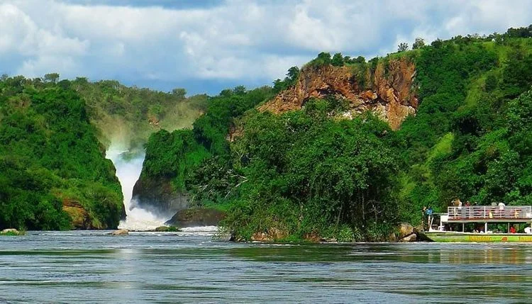

Ranking Uganda's national parks is useful, but it only works if you understand that they are not trying to do the same job. One excels at
waterfall drama and classic safari scale. Another shines through diversity and water-based viewing. Another feels intimate because the forest
itself is the experience. The "best" park depends partly on what kind of memory you want to bring home.
Uganda's strength is that its parks complement one another. Together they create one of the richest travel mixes in Africa. Separately, each
park has a specific emotional identity. That identity is what matters most when deciding where to spend precious days.
So instead of treating this ranking as a hard verdict, think of it as a guide to personality. Which park suits your style, pace, and curiosity?
1. Bwindi For Depth And Emotion

Bwindi belongs near the top because gorilla trekking
is unlike anything else in Uganda. The forest setting, the walk, and the encounter with a habituated gorilla family create a sense of
intimacy that most wildlife experiences cannot match. It is less about quantity and more about emotional force.
Travelers who want one unforgettable, deeply human-feeling wildlife moment will often place Bwindi first, even if it is not the easiest park
logistically. Its reward is depth.
2. Murchison For Scale And Variety

Murchison Falls National Park is one of Uganda's strongest
all-rounders. It offers big-game viewing, river life, open plains, and one of the country's most dramatic natural landmarks. If you want a
park that feels broad, cinematic, and immediately satisfying, Murchison is difficult to beat.
It ranks highly because it serves many travel styles well, from first-time safari travelers to photographers and route planners building a
northern circuit.
3. Queen Elizabeth For Range
Queen Elizabeth National Park wins on
diversity. It combines open plains, crater backdrops, boat safaris on the Kazinga Channel, strong birdlife, and the Ishasha sector's famous
tree-climbing lions. The park feels layered rather than singular, which is exactly why so many travelers find it richer than they expected.
If you want a safari destination with many moods and a route that never feels static, Queen Elizabeth deserves a top place on your list.
How The Rest Of The Top Tier Fits
Kibale stands out for chimpanzees and rainforest
energy. Kidepo is the choice for remoteness and raw
wildness. Lake Mburo offers smaller-scale charm and excellent
walking or gentle safari pacing. Mgahinga is compact but
special, especially for golden monkeys and volcanic scenery.
None of these parks are lesser in a simplistic sense. They are better understood as more specialized. The right ranking changes depending on
whether you prioritize primates, crowd levels, dramatic scenery, or classic safari abundance.
The Best Park Is Usually A Combination
Uganda is one of the few countries where choosing two or three parks often produces a stronger result than fixating on a single winner. Forest
and savannah sharpen one another. Water-based wildlife viewing improves open-country safari. Rest stops like Bunyonyi can elevate the parks
around them by changing the emotional tempo of the route.
That is the real answer to the ranking question. Uganda's parks are best not when one dominates the others, but when they are sequenced well
enough to show you just how many versions of the country exist side by side.